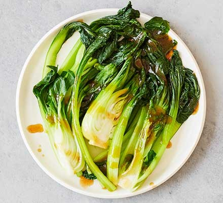

Asian Greens

Description
Serve this classic side dish as part of a Chinese meal using Asian green vegetables such as pak choi, choy sum or tatsoi
Ingredients
- 1 tbsp vegetable oil
- 2 tbsp oyster sauce
- 350g mixed Asian greens such as pak choi , choy sum or tatsoi
Steps
- Whisk the oil and oyster sauce with 1 tbsp water in a saucepan. Cook for 2-3 mins until glossy, then set aside.
- Bring a large pan of salted water to the boil. Add the greens, turn down the heat and cook for 2 mins, or until just wilted, then drain.
- To serve: cut any large bulbs in half and put on a plate. Drizzle the sauce over and serve immediately.